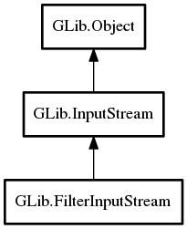

FilterInputStream
Object Hierarchy:
Description:
Base class for input stream implementations that perform some kind of filtering operation on a base stream.
Typical examples of filtering operations are character set conversion, compression and byte order flipping.
All known sub-classes:

Namespace: GLib
Package: gio-2.0
Content:
Properties:
Creation methods:
Methods:
Inherited Members:
All known members inherited from class GLib.InputStream
All known members inherited from class GLib.Object